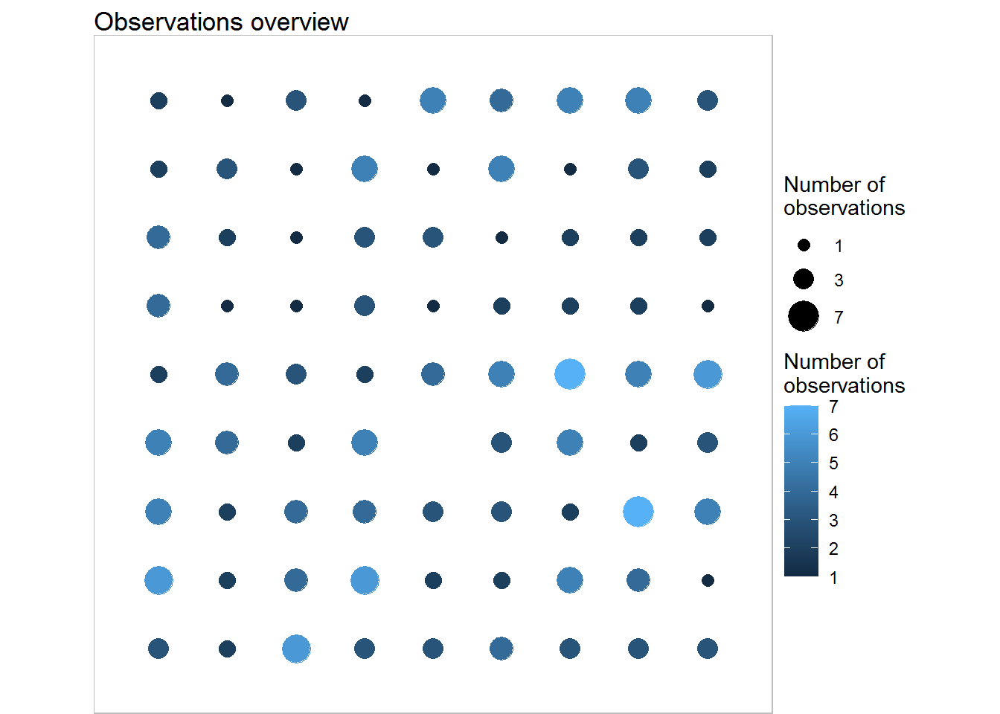
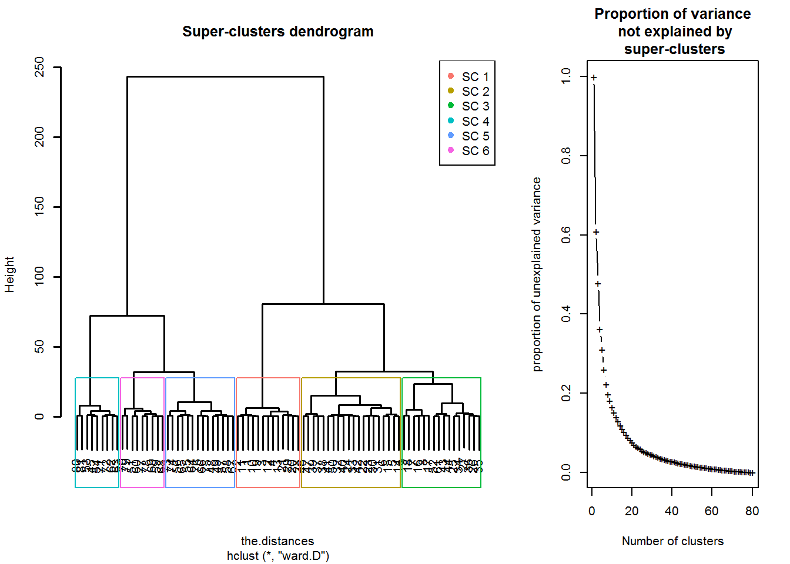
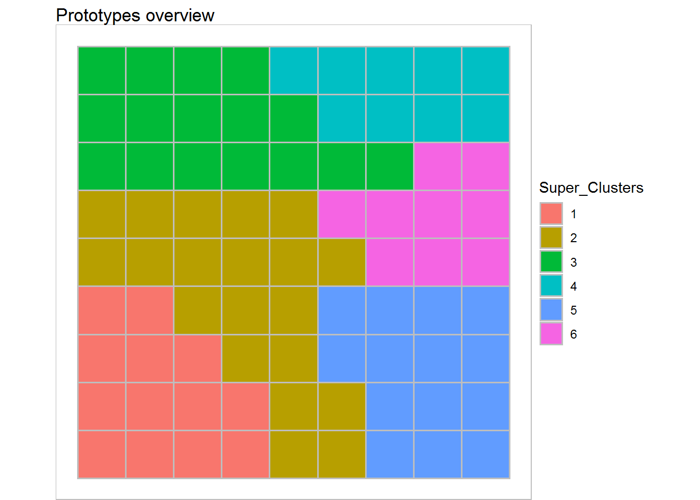
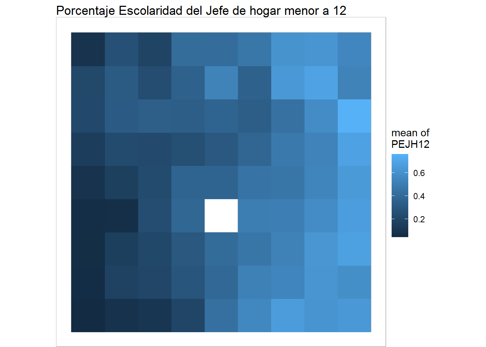
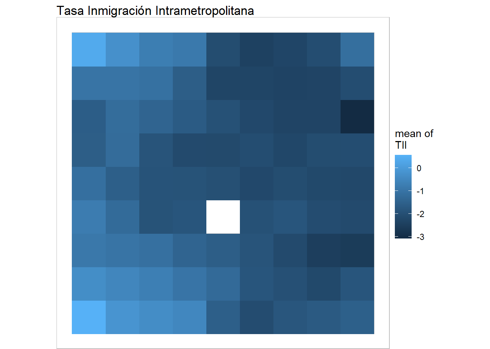
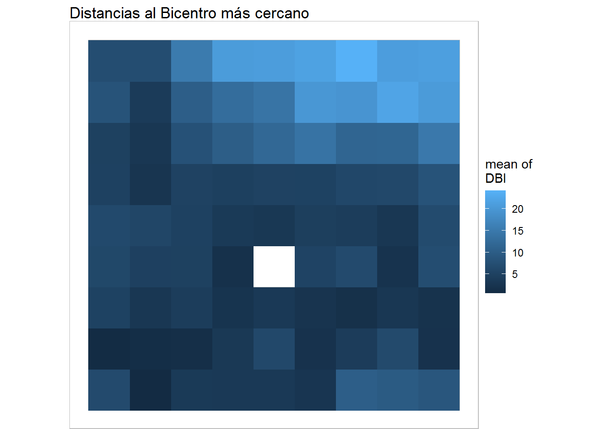
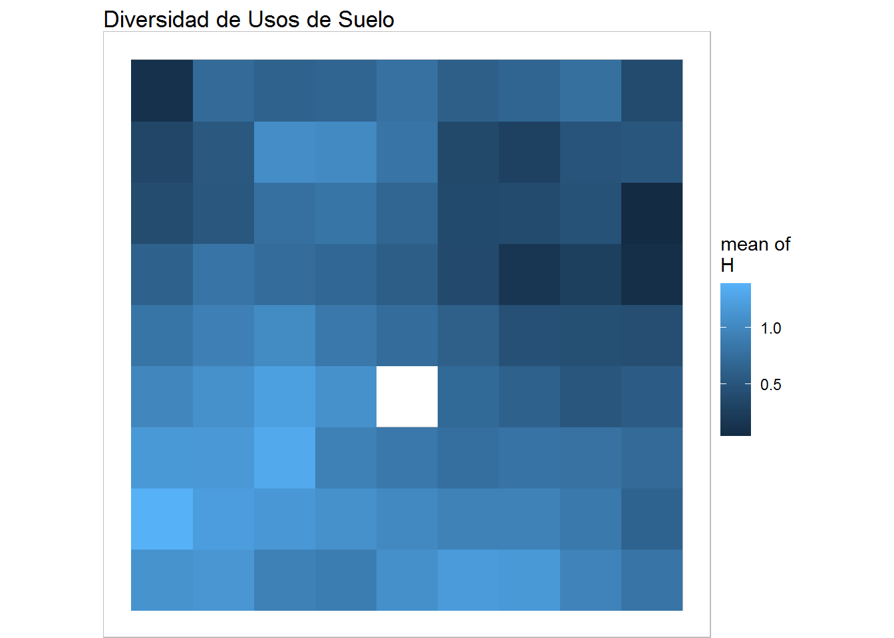
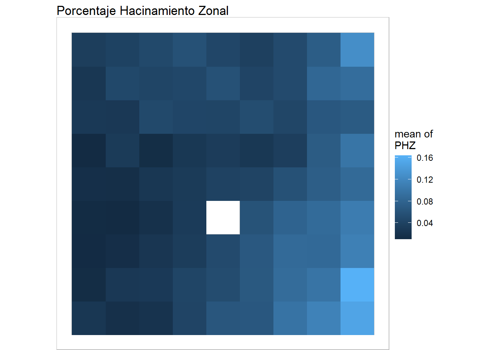

The document consist of reproducing de SOM methodology for cluster 6 zones in Conception Metropolitan Area, Chile.
library(SOMbrero)
library(dplyr)
library(ggplot2)
library(markdown)
options(scipen = 999)
set.seed(67)Connecting with the data base
ANALISIS<-read.csv('data/DB.csv')The number of neurons is chosen by
ncel=round(sqrt(5*sqrt(dim(ANALISIS)[1])),digits=0)Neural network training
training<-trainSOM(x.data=select(ANALISIS,PEJH12,TII,DBI,H,PHZ),
dimension=c(ncel,ncel),
radius.type='letremy',
verbose=TRUE,
maxit=5000)Evaluating quality model
summary(training)##
## Summary
##
## Class : somRes
##
## Self-Organizing Map object...
## online learning, type: numeric
## 9 x 9 grid with square topology
## neighbourhood type: letremy
## distance type: letremy
##
## Final energy : 0.005339251
## Topographic error: 0.09486166
##
## ANOVA :
##
## Degrees of freedom : 79
##
## F pvalue significativity
## PEJH12 57.594 0 ***
## TII 27.949 0 ***
## DBI 29.266 0 ***
## H 33.432 0 ***
## PHZ 38.406 0 ***plot(training,what ='obs',show.names = FALSE) Dendrograma analysis
nclas=6
scEST_S7<-superClass(training,k=nclas)
plot(scEST_S7,lwd=1.5)
plot(scEST_S7,type='grid',plot.legend=TRUE,show.names = FALSE) Heat Maps
plot(training, what="obs", type="color", variable=1, print.title=FALSE, main='Porcentaje Escolaridad del Jefe de hogar menor a 12') + geom_raster()
plot(training, what="obs", type="color", variable=2, print.title=FALSE, main='Tasa Inmigración Intrametropolitana') + geom_raster()
plot(training, what="obs", type="color", variable=3, print.title=FALSE, main='Distancias al Bicentro más cercano') + geom_raster()
plot(training, what="obs", type="color", variable=4, print.title=FALSE, main='Diversidad de Usos de Suelo') + geom_raster()
plot(training, what="obs",type="color", variable=5, print.title =FALSE, main='Porcentaje Hacinamiento Zonal') + geom_raster() Then what you need to know are the descriptive statistics by cluster. For that, you need to make arrangements before starting.
ID <-names(training$clustering)
NEUR <-as.integer(training$clustering)
CLUSTER<-rep(0,length(NEUR))
for(i in 1:length(NEUR)){ CLUSTER[i]<-scEST_S7$cluster[NEUR[i]] }
MERGE<-merge(data.frame(ID,NEUR,CLUSTER), select(ANALISIS, ID,PEJH12,TII,H,PHZ,DBI), by.x="ID", by.y="ID")With the latter, we have the neuron and the supercluster of each observation, so from now on you can carry out the process
## PEJH12 TII PHZ H
## Min. :0.007952 Min. :-1.3915 Min. :0.005291 Min. :0.7931
## 1st Qu.:0.058571 1st Qu.:-0.9905 1st Qu.:0.011520 1st Qu.:1.0129
## Median :0.103998 Median :-0.7432 Median :0.017952 Median :1.1306
## Mean :0.129488 Mean :-0.6481 Mean :0.021906 Mean :1.1237
## 3rd Qu.:0.188489 3rd Qu.:-0.4024 3rd Qu.:0.029507 3rd Qu.:1.2073
## Max. :0.320896 Max. : 1.6582 Max. :0.060852 Max. :1.6675
## DBI
## Min. : 0.2732
## 1st Qu.: 1.2949
## Median : 3.3339
## Mean : 3.4982
## 3rd Qu.: 5.2266
## Max. :10.7100## PEJH12 TII PHZ H
## Min. :0.05675 Min. :-2.414 Min. :0.00223 Min. :0.5325
## 1st Qu.:0.22837 1st Qu.:-2.078 1st Qu.:0.02303 1st Qu.:0.7335
## Median :0.34177 Median :-1.795 Median :0.03190 Median :0.9137
## Mean :0.33250 Mean :-1.782 Mean :0.03539 Mean :0.8903
## 3rd Qu.:0.42859 3rd Qu.:-1.582 3rd Qu.:0.04702 3rd Qu.:1.0300
## Max. :0.58308 Max. :-1.106 Max. :0.07754 Max. :1.3540
## DBI
## Min. : 0.2025
## 1st Qu.: 2.7509
## Median : 3.8551
## Mean : 3.9170
## 3rd Qu.: 5.1558
## Max. :10.0468## PEJH12 TII PHZ H
## Min. :0.04987 Min. :-2.3933 Min. :0.01495 Min. :0.02068
## 1st Qu.:0.23153 1st Qu.:-1.7205 1st Qu.:0.03360 1st Qu.:0.42674
## Median :0.31889 Median :-1.4277 Median :0.04188 Median :0.63548
## Mean :0.29926 Mean :-1.3412 Mean :0.04119 Mean :0.62206
## 3rd Qu.:0.36134 3rd Qu.:-1.0143 3rd Qu.:0.04875 3rd Qu.:0.78341
## Max. :0.53122 Max. : 0.7382 Max. :0.06338 Max. :1.10239
## DBI
## Min. : 1.127
## 1st Qu.: 5.390
## Median :11.097
## Mean : 9.743
## 3rd Qu.:12.664
## Max. :20.704## PEJH12 TII PHZ H
## Min. :0.1737 Min. :-2.6717 Min. :0.02403 Min. :0.2317
## 1st Qu.:0.4373 1st Qu.:-2.3713 1st Qu.:0.04142 1st Qu.:0.4367
## Median :0.5121 Median :-2.2337 Median :0.05592 Median :0.5976
## Mean :0.5253 Mean :-2.1268 Mean :0.06199 Mean :0.5833
## 3rd Qu.:0.6328 3rd Qu.:-2.0048 3rd Qu.:0.08351 3rd Qu.:0.7316
## Max. :0.7656 Max. :-0.2134 Max. :0.13533 Max. :0.8976
## DBI
## Min. :14.77
## 1st Qu.:20.20
## Median :21.43
## Mean :21.42
## 3rd Qu.:22.97
## Max. :24.36## PEJH12 TII PHZ H
## Min. :0.4473 Min. :-2.934 Min. :0.05628 Min. :0.4649
## 1st Qu.:0.5303 1st Qu.:-2.355 1st Qu.:0.07986 1st Qu.:0.6600
## Median :0.6132 Median :-2.007 Median :0.09377 Median :0.7544
## Mean :0.5921 Mean :-2.077 Mean :0.09554 Mean :0.7868
## 3rd Qu.:0.6575 3rd Qu.:-1.825 3rd Qu.:0.10849 3rd Qu.:0.8976
## Max. :0.7408 Max. :-1.493 Max. :0.16929 Max. :1.3134
## DBI
## Min. : 0.8109
## 1st Qu.: 2.2301
## Median : 4.1917
## Mean : 5.1364
## 3rd Qu.: 7.4792
## Max. :14.6807## PEJH12 TII PHZ H
## Min. :0.2871 Min. :-3.406 Min. :0.01597 Min. :0.0002172
## 1st Qu.:0.4708 1st Qu.:-2.323 1st Qu.:0.05476 1st Qu.:0.3295196
## Median :0.5411 Median :-2.172 Median :0.06686 Median :0.4162130
## Mean :0.5507 Mean :-2.224 Mean :0.06598 Mean :0.3646664
## 3rd Qu.:0.6096 3rd Qu.:-2.074 3rd Qu.:0.08000 3rd Qu.:0.4588388
## Max. :0.7727 Max. :-1.724 Max. :0.10000 Max. :0.5758522
## DBI
## Min. : 0.6734
## 1st Qu.: 4.1994
## Median : 6.1108
## Mean : 6.2149
## 3rd Qu.: 6.9988
## Max. :21.1729diegmedina@udec.cl